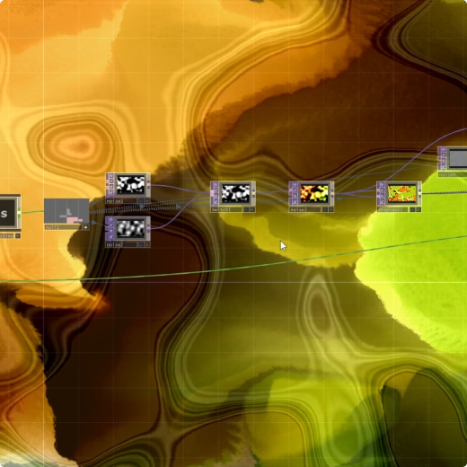

Audio-Reactive Visuals in TouchDesigner
Diving into TouchDesigner to create audio-reactive visuals has been an exciting and challenging experience. I’ve always been fascinated by the interplay between sound and visuals, and this journey has opened up new creative possibilities for me.

Abstract Visual Exercise in TouchDesigner
This exercise in TouchDesigner focuses on procedural abstraction and motion design, exploring shape manipulation, transformations, and effects to generate dynamic visuals.